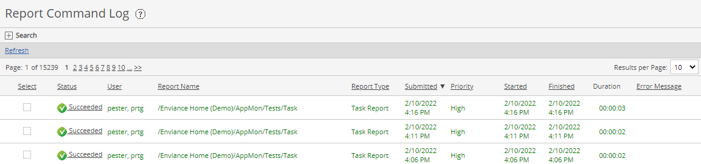

The Report Command Log shows report execution history. The list includes both manually run reports and scheduled reports.
Through the Report Command Log you can view the results of previously run reports. The number of cached reports is determined by your system configuration.
Users see all report execution commands which they have issued themselves in the system. Users with the Manage Report rights (or Administrators) will see all report commands.
To view the Report Command Log:

You can also search by the date/time range when reports were run.
Right click the report in the list and choose View Details or click the link in the Status column.
Details included the status of the command, the user who initiated the running of the report, date submitted for running, formatting details, and any errors encountered.
If the status is Succeeded, you may view the results of the report from the report cache.
On the report execution details page, click the View link to view the report.
Optionally, you may change the default output format shown, if you want to view the results in a different format. Reports run in Preview mode are not cached and therefore not retrievable. The default number of cached reports is 10.
To view the execution history of a specific report and access cached reports, from the Reports library right click the report and choose View Execution History.
If there are multiple reports in the report queue, you can change the execution priority, making them higher or lower.
In the Priority column on the Report Command Log page, click the Make Higher link (for reports with Normal priority) or Make Lower link (for reports with High priority).
You can also click Make Higher or Make Lower from the Report Command Log Details for a report transaction.
Manually run reports will always have a higher priority than scheduled reports.
Right click the report transaction in the log and click Resubmit Command.
This option appears only for those report commands with Failed status.
Select one or more items, then right click and select Delete Selected.
Deleting item from the Report Command Log deletes the transaction from the log, but does not delete the report execution history for reports in the Reports library or any cached reports.